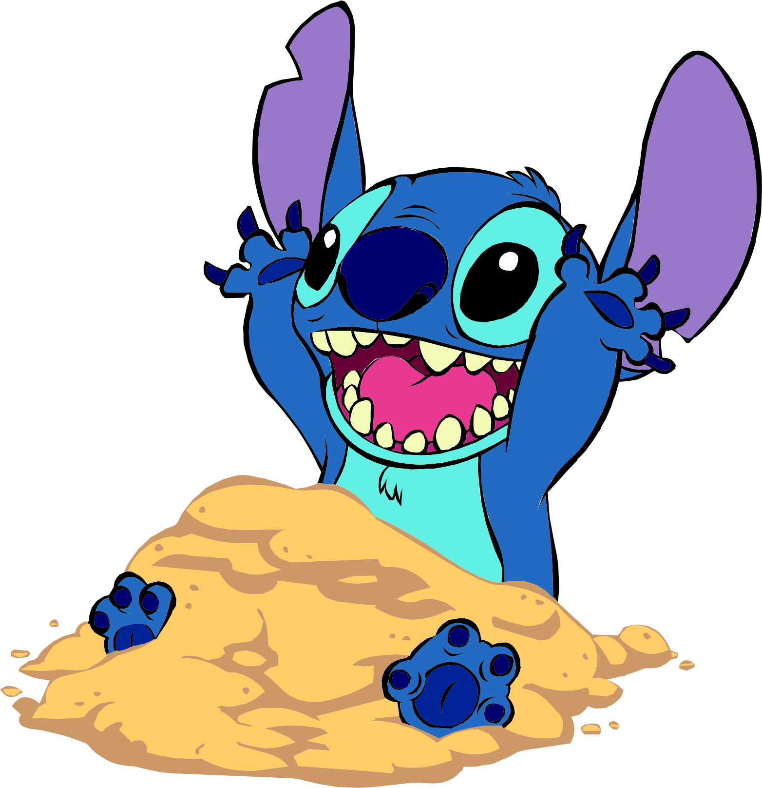
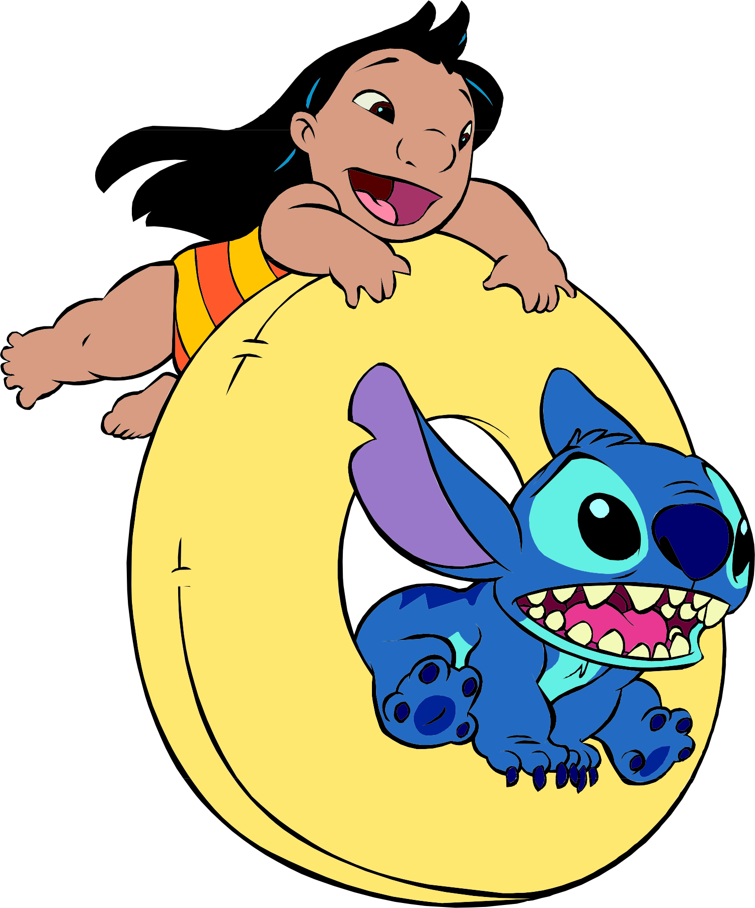
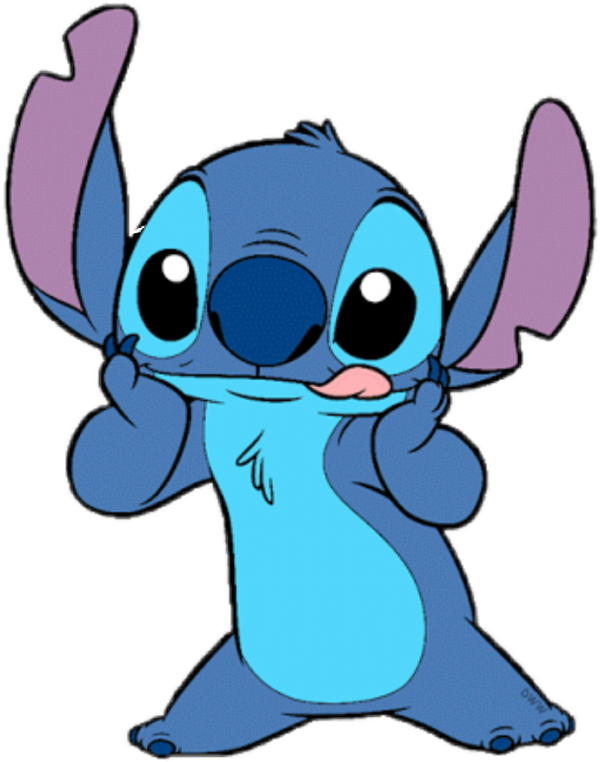

Convide um(a) amigo(a) para jogar contigo, copie o link do jogo e envie para ele/ela
Cada jogador(a) terá que jogar 3 rodadas, cada rodada vale 1 ponto, quem fizer 2 pontos: ganha!
1ª Rodada: Inicie o crônometro, encontre todos os pares da cartas e pause o cronômetro
Anote seu tempo em um papel para poder comparar com seu(sua) adversário(a)
Após seu(sua) amigo(a) realizara 1ª rodada, comparem os tempos
Quem tiver feito o menor tempo, ganha o ponto.
Aperte o botão vermelho (atualizar) para recarregar a página e iniciar um novo jogo
O ganhador da 1ª rodada, dá inicio a 2ª rodada.
Repetir os passos para a 3ª rodada.
Experiência 626!
Se o jogador(a) que tiver perdido quizer dar a volta por cima, essa é a chance!
Caso o perdedor em alguma das 3 rodadas tenha feito um tempo igual seu oponente, ele ganha 1 ponto e empata com seu oponente, ou seja:
Ele tinha 1 ponto e o vencedor tinha 2 pontos
Tempo igual (ganha 1 ponto): Ele empata com o vencedor em 2 x 2
O desempate é feito na 4ª rodada da seguinte forma:
O perdedor poderá se tornar o novo vencedor se ele(ela) vencer seu(sua) oponente com o menor tempo feito de todas as outras rodadas.
Bom jogo!